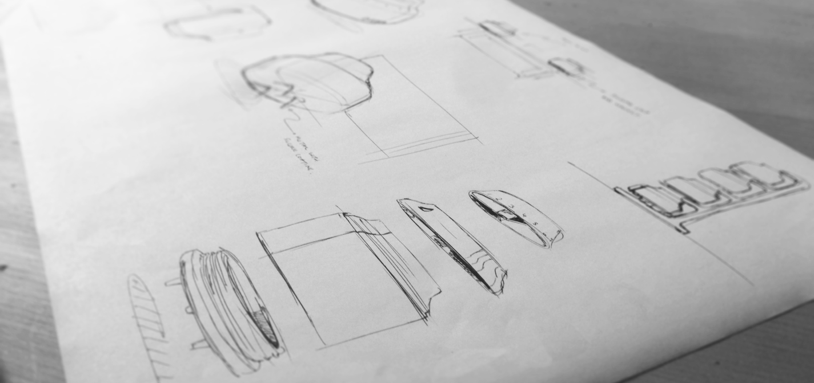

Timely

Introduction
Loughborough University holds a unique module called design week, where a successful brand sets a design brief with a deadline of one week.
The Problem
Their problem was that people order convenience food because they don't have the time to prepare meals for themselves.
The brief stated no use of electronics or apps and to stay under a £20 manufacturing budget.
Research
The kitchenware industry boasts many task-specific time-saving products. Silicon is a favoured material due to its robust nature and attractive colours.
I phone interviewed a chef to identify products or practices that were not typically available to the public.
Insights
In order to fully empathise with the person cooking, I observed different people cooking various dishes and then also took it upon myself to cook for 4 people.

I found that an inability to effectively track cooking and preparation times for different foods resulted in wasted time.
Design
Using this major insight I solved the problem by introducing a set of timers that could simply be assigned to individual cooking tasks.

By incorporating the markets use of attractive colours, I gave each timer a specific colour to help distinguish between the task and time.


The product was simple and incorporated a bought in timer component to reduce costs.
Outcome
I was awarded 3rd prize and £200 for my design.

Take away
This was the first time I made use of user observation and it has changed my understanding of products and the way I approach design. That is why I like this project so much.